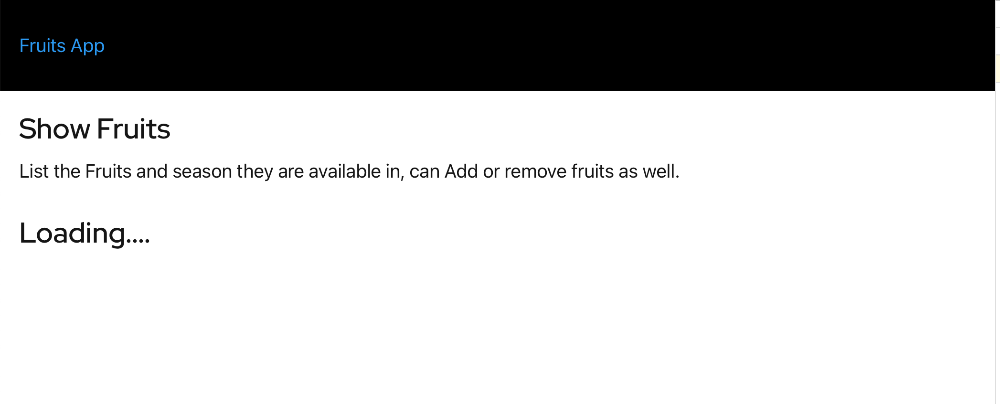
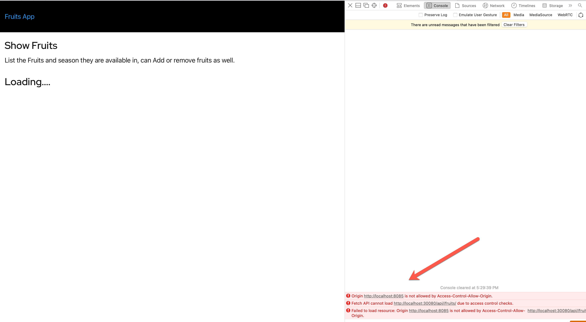
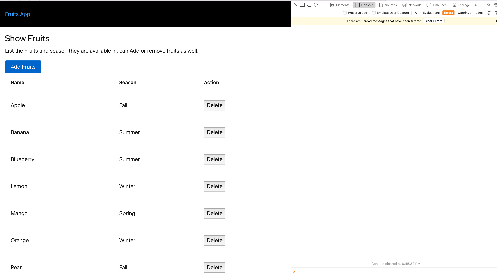

Gloo Edge::CORS¶
At the end of this chapter you would have known how to:
- Configure CORS
Gloo Edge also supports configuring the CORS policies without the need to redeploy the backend API application. As part of this section we will extend our demo Fruits API with simple SPA.
Build the UI Application¶
Since the SPA are accessed from browser we need to rebuild the UI with th GLOO_PROXY_URL that the application need to use,
docker build --build-arg="GLOO_PROXY_URL=$GLOO_PROXY_URL" \
-t example/fruits-ui \
-f $TUTORIAL_HOME/Dockerfile-UI $TUTORIAL_HOME
Once the contianer is built let us run it,
docker run --rm -p 8085:8080 example/fruits-ui
When you open the localhost:8085 in the browser you will see application page like

When you open the browser’ developer tools console, you should notice the CORS errors like:

Update Virtual Service¶
To fix this we need to update the Virutal Service with CORS options,
apiVersion: gateway.solo.io/v1
kind: VirtualService
metadata:
name: fruits-api
namespace: gloo-system
spec:
displayName: FruitsAPI
virtualHost:
options:
# -------- CORS Config -----------
cors: # (1)
allowOriginRegex:
- '^http(s)?:\/\/localhost:[0-9]{4,5}$' # (2)
allowHeaders: # (3)
- origin
- content-type
allowMethods: # (4)
- DELETE
maxAge: 1d
# -------- Web Application Firewall - Check User-Agent -----------
waf:
customInterventionMessage: "Firefox not supported"
ruleSets:
- ruleStr: |
SecRuleEngine On
SecRule REQUEST_HEADERS:User-Agent ".*Firefox.*" "deny,status:403,id:107,phase:1,msg:'unsupported user agent'"
domains:
- "*"
routes:
# --------------------- Application Routes -----------------
- matchers:
- prefix: /api/
routeAction:
single:
upstream:
name: fruits-app-fruits-api-8080
namespace: gloo-system
options:
prefixRewrite: /v1/api/
# ---------------- Rate limit config ----------------------
rateLimitConfigs:
refs:
- name: global-limit
namespace: gloo-system
- Enable CORS options
- The Origin Regular Expression, this will allow all
localhost - The CORS headers that are allowed
- The methods that the orgins can excute
Now let us update the virtual service,
kubectl apply -n gloo-system -f $TUTORIAL_HOME/apps/microservice/fruits-api/gloo/virtual-service-cors.yaml
Now try refreshing the browser url localhost:8085 and you will see a list of fruits as shown without any CORS errors.
